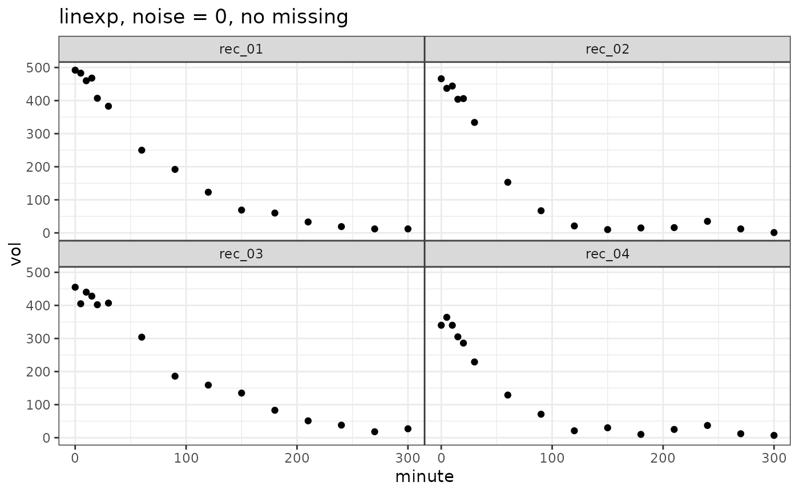

Simulate gastric emptying data following a linexp or powexp function
Source:R/simulate_gastempt.R
simulate_gastempt.RdSimulate gastric emptying data following a linexp or powexp function
Usage
simulate_gastempt(
n_records = 10,
v0_mean = 400,
v0_std = 50,
tempt_mean = ifelse(identical(model, linexp), 60, 120),
tempt_std = tempt_mean/3,
kappa_mean = 0.7,
kappa_std = kappa_mean/3,
beta_mean = 0.7,
beta_std = beta_mean/3,
noise = 20,
student_t_df = NULL,
missing = 0,
model = linexp,
seed = NULL,
max_minute = NULL
)Arguments
- n_records
Number of records
- v0_mean, v0_std
Mean and between record standard deviation of initial volume, typically in ml.
- tempt_mean, tempt_std
Mean and between record standard deviation of parameter $t_empt$, typically in minutes.
- kappa_mean, kappa_std
For linexp only: Mean and between-record standard deviation of overshoot parameter
kappa. For values ofkappaabove 1, curve has an overshoot that can be used to follow volume time series with secretion.- beta_mean, beta_std
For powexp only: Mean and between-record standard deviation of the so called lag parameter.
- noise
Standard deviation of normal noise when
student_t_df = NULL; scaling of noise when student_t_df >= 2.- student_t_df
When NULL (default), Gaussian noise is added; when >= 2, Student_t distributed noise is added, which generates more realistic outliers. Values from 2 to 5 are useful, when higher values are used the result comes close to that of Gaussian noise. Values below 2 are rounded to 2.
- missing
When 0 (default), all curves have the same number of data points. When > 0, this is the fraction of points that were removed randomly to simulate missing points. Maximum value is 0.5.
- model
linexp(default) or powexp
- seed
optional seed; not set if seed = NULL (default)
- max_minute
Maximal time in minutes; if NULL, a sensible default rounded to hours is used
Value
A list with 3 elements:
- record
Data frame with columns
record(chr), v0, tempt, kappa/betagiving the effectivelinexporpowexpparameters for the individual record.v0is rounded to nearest integer.- data
Data frame with columns
record(chr), minute(dbl), vol(dbl)giving the time series and grouping parameters.volis rounded to nearest integer.- stan_data
A list for use as
datain Stan-based fits with elementsprior_v0, n, n_record, record, minute, volume.
A comment is attached to the return value that can be used as a title
Examples
suppressWarnings(RNGversion("3.5.0"))
set.seed(4711)
library(ggplot2)
vol_linexp = simulate_gastempt(n_records = 4, noise = 20)
ggplot(vol_linexp$data, aes(x = minute, y = vol)) + geom_point() +
facet_wrap(~record) + ggtitle("linexp, noise = 0, no missing")

vol_powexp = simulate_gastempt(n_records = 4, missing = 0.2, student_t_df = 2)
ggplot(vol_powexp$data, aes(x = minute, y = vol)) + geom_point() +
facet_wrap(~record) + ggtitle("powexp, noise = 10 (default), 20% missing,
Student-t (df = 2) noise")